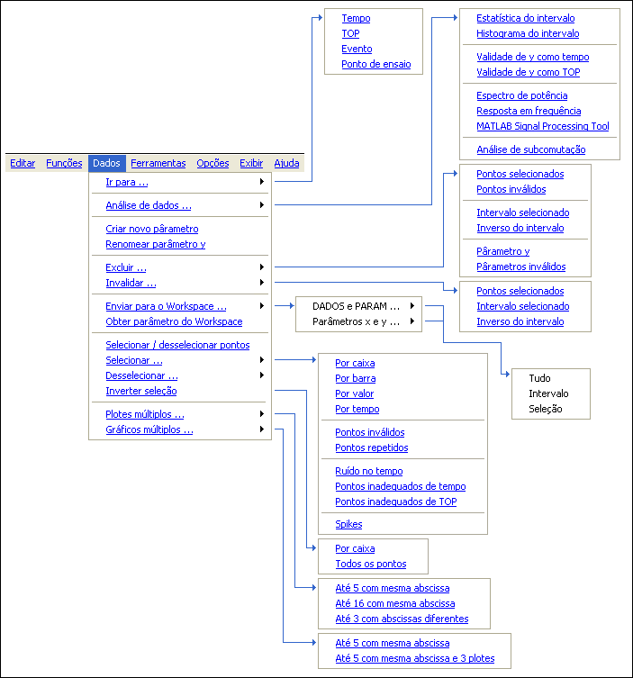

| Menu Dados |
|
Descrição
Estrutura do menu “Dados”:

|
Nota:
Se durante
alguma operação ocorrer esgotamento de memória RAM para o MATLAB
(mensagem de erro
"OUT OF MEMORY"), poderá ocorrer corrupção das matrizes de
trabalho. Nesse caso, reinicie o R_DAT e recarregue o último
arquivo
salvo (o trabalho
não salvo será perdido). |
| |
Início |
Ir
para |
|